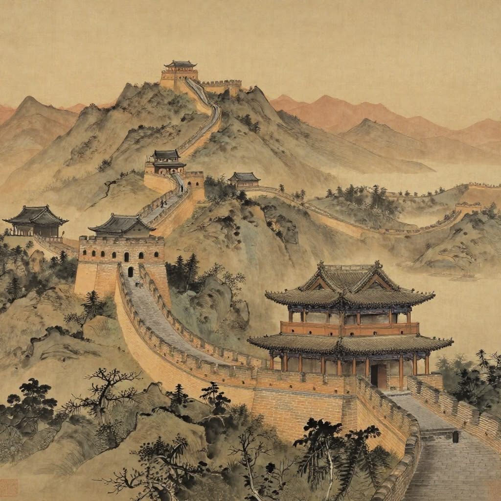

อารยธรรมจีน

ความเป็นมา
อารยธรรมจีนพัฒนาขึ้นบริเวณลุ่มแม่น้ำฮวงโห และแม่น้ำแยงซี โดยมีราชวงศ์ต่าง ๆ เป็นส่วนสำคัญ ในการพัฒนาประเทศ
สิ่งประดิษฐ์สำคัญ
จีนมีสิ่งประดิษฐ์ที่สำคัญหลายอย่าง เช่น กระดาษ การพิมพ์ เข็มทิศ และดินปืน ซึ่งมีอิทธิพลต่อโลก ในเวลาต่อมา